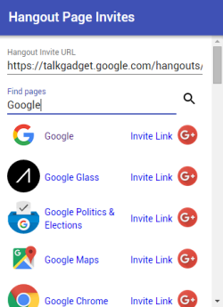

This simple hangout extensions allows you to create invite links for Google+ pages to join your Hangout.
To install the extension use this link to open a Hangout with the extension preloaded:
The standard invite link for your Hangout will be filled automatically.
You can then search for Google+ pages by name and either copy the Invite Link (right-click > copy link address) and send the link to a page manager using your preferred communication method or use the G+ button to share the link with them.
You can also use the extension outside of a Hangout but will have to enter your Hangout invite link manually.
